- 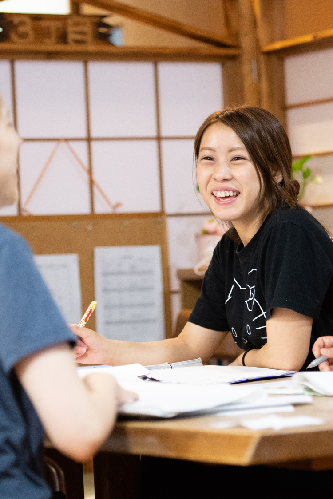

- 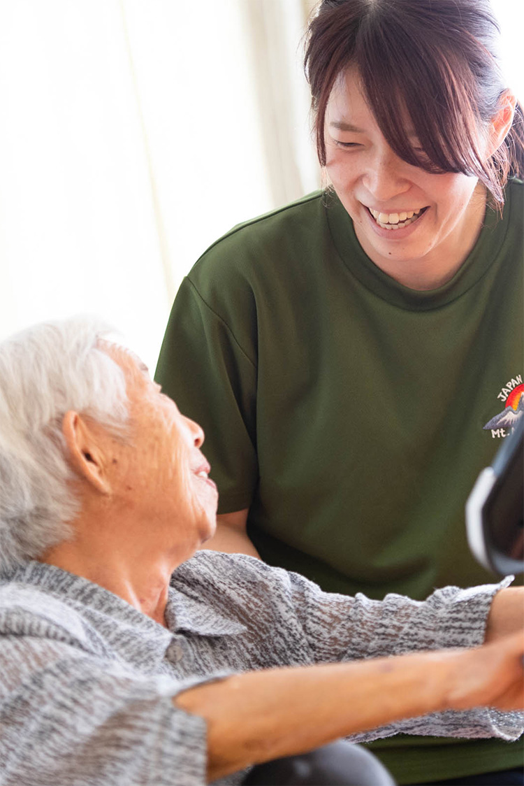
- 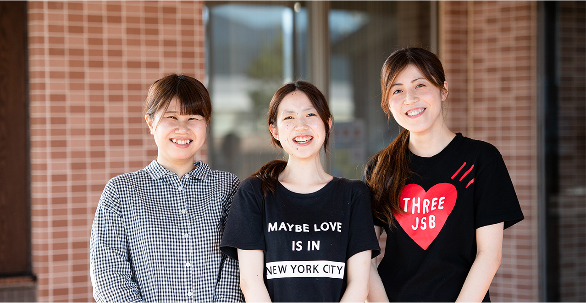

- 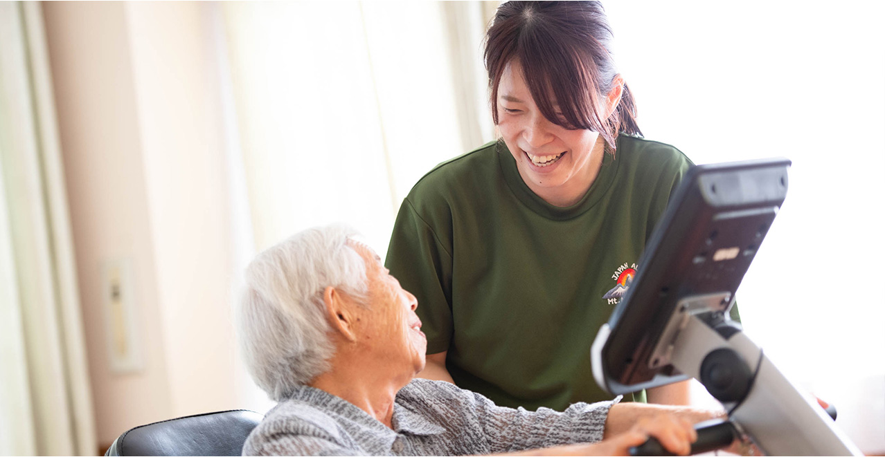
快適で安心できる生活に
医療と介護のトータルケアを提供
家のような温かさと医療で支えられた安心。
医療と介護のトータルケアで実現します。
あさくらグループは、介護を必要とされる高齢者の方に対して、
心から安心できる場所とサービスを提供する高齢者総合施設です。
福井、横浜の全6地区で施設を運営しています。
メーセージ
MESSAGE
あさくらグループは、
人と自分の「尊厳」を守り育てる職員を求めています。
 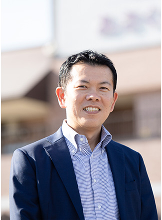
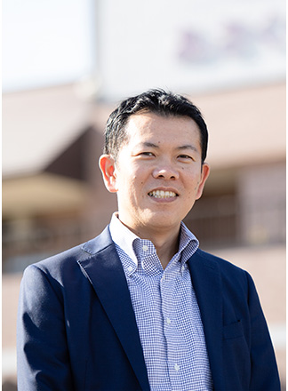
「されて嫌なことはしない」人生の先輩たちに尊敬と思いやりをもって接する、当たり前のことが素直に実践できる方を求めています。
そしてこれからの人生をどう生きるのか、そこに寄り添い、支える気持ちと実現に向けての行動力を備えた人になっていただきたいと考えています。
そのために必要となるのが、「学び」「表現し」「チームに貢献する」力です。日々変化する介護や福祉についての学習を進んで行い、
得た知識や経験を現場に必要な形で表現し、共に働く仲間を尊重し、ミーティングを有意義なものにする努力を怠らず、皆で決めたことを守り、実践する。
日々の細やかな努力が必要となることばかりですが、その一歩一歩を着実に歩んでいくことができる方と一緒に、理想のケアの実現を進めたいと望んでいます。
そして、何より自身が健やかであること、周りだけでなく自分を大切にすることを忘れずに過ごせる方を求めています。
先輩の声
STAFF
- 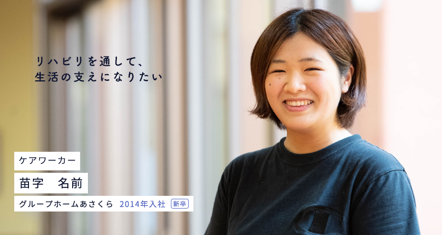
- 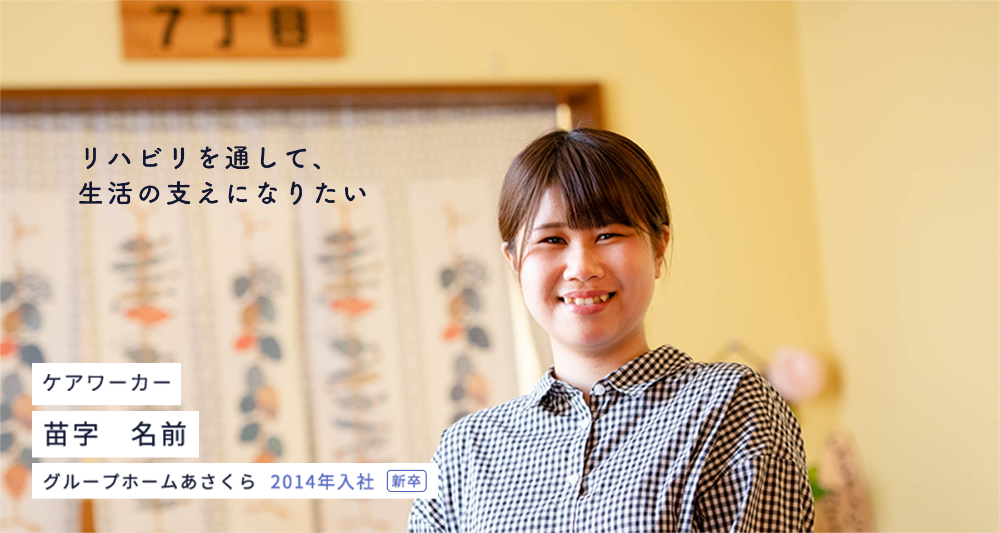
- 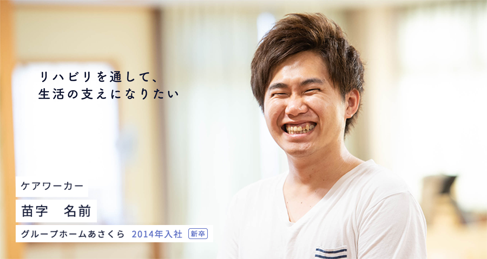
- 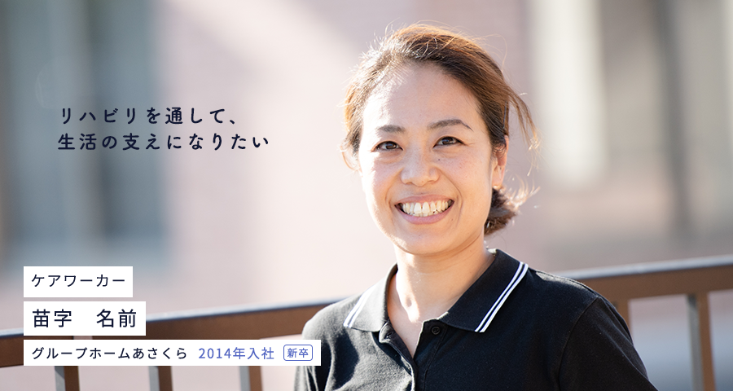
- 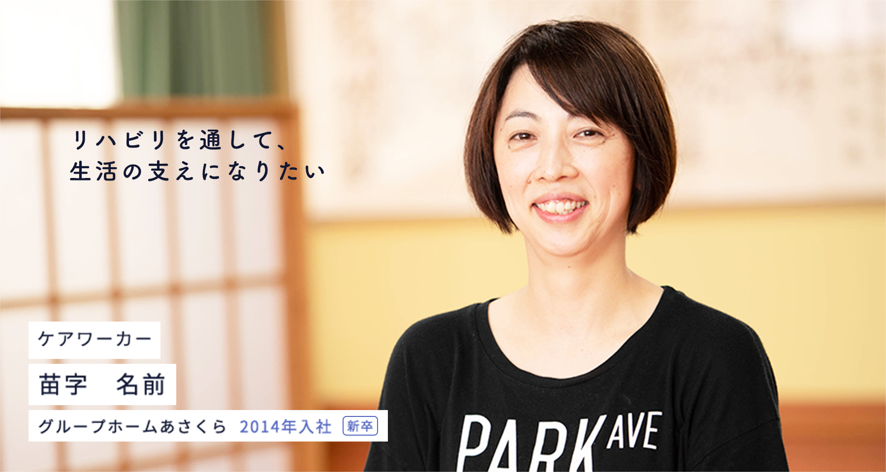
ケアワーカーとして、入居者さまのお食事や入浴、排泄の介助など、支援が必要な方の日常生活をサポートしています。
あさくら苑を選んだ理由を教えてください。
あさくら苑を選んだ理由としては、施設見学の際に知った「自由な生活」の実現、「人権の尊重」という法人理念に共感したからです。これまでがどうだったかよりも、これからどうするかを考える、未来を重視する考え方にも惹かれました。
実際に仕事をしてみて、どうでしたか？
入居者の方の中には言葉が不明瞭な方や、意思表示が難しい方もいらっしゃるので、コミュニケーションの取り方がわからないことも多かったのですが、先輩の対応を見ながら様々な入居者と関わるうちに徐々に慣れていきました。
この仕事のやりがいを教えてください。
利用者の方から「ありがとう」というv 感謝の言葉や、「◯◯さんにお願いしたい」と言っていただけたとき、この仕事をしていてよかったと感じます。以前、体調を崩されて寝た状態が続き、床ずれをおこしてしまった利用者さまがいたのですが、スタッフ同士でアイデアを出し合い、ネガティブになりかけていた利用者さまに笑顔が戻ったときはとても嬉しかったです。
今後の目標について教えてください。
利用者に寄り添った介護を行い、患者さまやご家族、スタッフから信頼されるケアワーカーになりたいと思っています。取得したい資格があるので、ステップアップに向けて日々勉強しています。
福利厚生
WELFARE
-
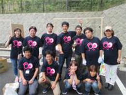
職員旅行
-
職員間交流費の補助
-
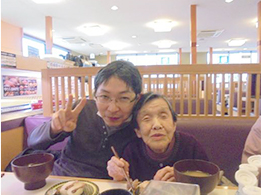
入居者付付き添い時の外食代補助
-
健康診断・予防接種の全額補助
-
各種保険加入
健康保険、厚生年金保険、雇用保険、労災保険 -
休暇制度有り
有給休暇、育児・介護休暇制度、産前産後休暇、その他
勤務地
LOCATION
福井エリア
六条地区／東郷地区／一乗地区／旭地区／麻生津・清明地区
横浜エリア
青葉地区
配属については、ご希望を考慮の上決定致します。